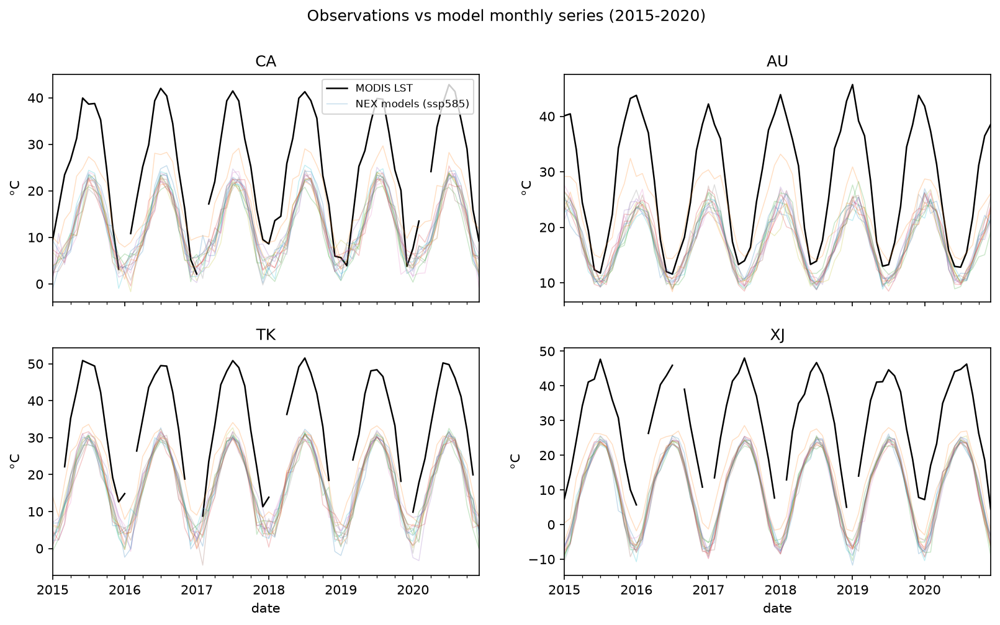
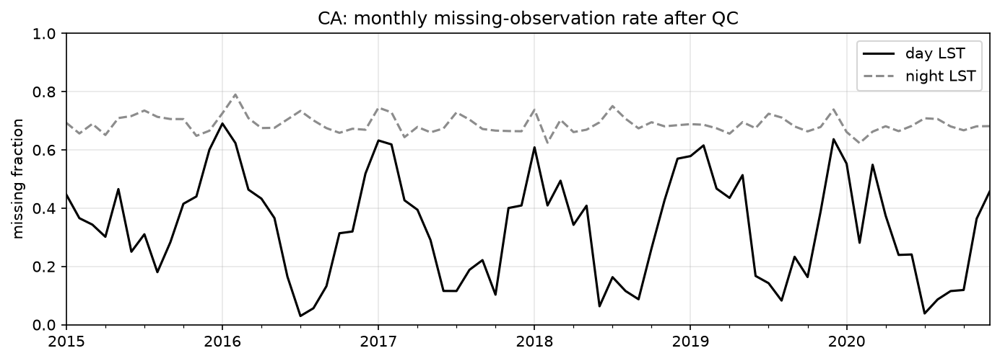
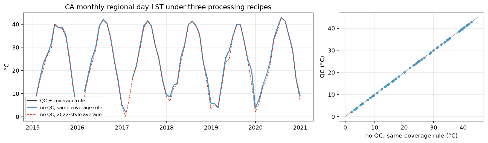
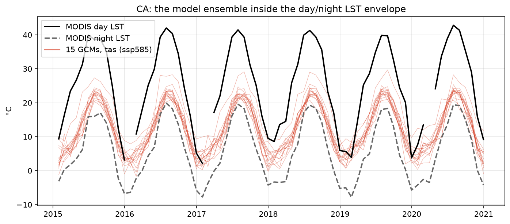
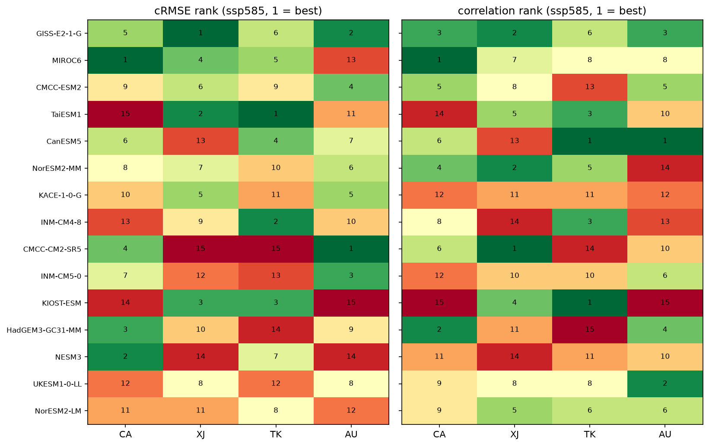
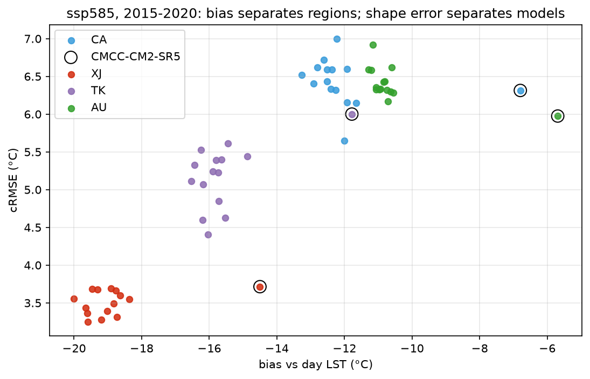
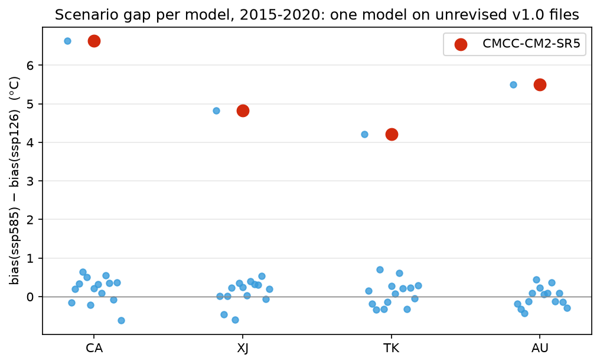
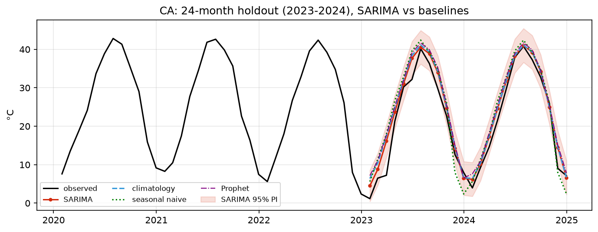

Summary of Findings
This analysis returns to a question posed in autumn 2022: how far apart satellite land surface temperature (LST) and modeled near-surface air temperature (tas) sit, and which term carries the gap. Back then one California region was ranked by RMSE and a best model came out of it. Four years later every original data link had gone dead. I rebuilt the pipeline from two public NASA databases, scaled it out to four regions, 15 CMIP6 models and two emissions scenarios, and put each of the 2022 conclusions back somewhere it could be tested.
Six Findings
- Offset accounts for 74% to 97% of squared error. Regional medians of bias² as a share of RMSE² are AU 74%, CA 79%, TK 90% and XJ 97%, with all 60 region-model combinations falling between 0.48 and 0.97. A ranking by RMSE ranks the physical gap between skin and air temperature.
- CMCC-CM2-SR5 won 2022 on its data version. It minimizes raw RMSE in all four regions, yet on shape it ranks 4th in CA, 1st in AU and 15th in both XJ and TK. Of the 15 models it is the only one with no v2.0 revision in the NEX archive.
- A calendar error sits inside the published RMSE anchor. Three models run on a 360-day calendar, and parsing their time axes as Gregorian dates returns 9.0725 °C. What 2022 published was 9.1046; correct handling through cftime returns 8.4599 °C.
- The ranks do not separate. Four regions produce four different cRMSE winners, and three of those change under ssp126. Median 95% bootstrap intervals on one model run 1.14 °C in CA, 1.20 in TK, 0.93 in AU and 0.76 in XJ, a width that covers the entire field in three of the four regions.
- What the rebuild delivers is a bias correction. Fitted on 2015–2018 and tested on 2019–2020, median RMSE against day LST falls from 12.29–19.17 °C on raw tas to 2.36–3.78 °C with twelve monthly values.
- Six years of monthly data cannot support a SARIMA. On CA's 299-month record the residual diagnostics pass (Ljung-Box p = 0.9379) and the model beats monthly climatology; run on 72 months the same procedure fails the diagnostics (p = 0.0) and loses to climatology. The 2022 forecasting plan was infeasible on the data it had.
Results at a Glance
| Item | Result |
|---|---|
| Scope | Four regions × 15 CMIP6 models × 2 scenarios, monthly over 2015–2020 |
| Observations | MODIS MOD11A1 point LST, 1,020 grid-cell centers, daily |
| Core decomposition | rmse² = bias² + crmse², with offset taking 74% to 97% |
| Audit findings | A 360-day calendar error, an unrevised data version, an over-coarse extraction scale |
| Deliverable | Regional monthly bias correction, holdout median RMSE 2.36–3.78 °C |
| Reference baseline | Climatology of the observations at 1.85–3.08 °C, better in all four regions |
| Ranking verdict | Each leader occupies a rank range of CA 1–2, XJ 1–6, TK 1–7, AU 1–10 |
| Scenario verdict | Over six years, every SSP gap interval contains zero |
The Sponsor's Question and the 2022 Deliverable
The project addendum of 14 October 2022 set the objective as monitoring and predicting climate-related hazards from the temporal and spatial data in satellite imagery, connecting those to economic data, and informing the risk assessments behind the products S&P sells to its clients. What that placed on the student side was collecting and tidying the datasets, then quantifying per GCM the difference between observational and derived data in the MODIS and NEX-GDDP NASA databases, with California given as an example region.
Landing that output on a given parcel requires three operational answers first. Each of the three gets an answer with an uncertainty attached below.
- Which GCM to feed into a regional heat estimate.
- Whether the scenarios have to be run separately, or one is enough.
- Whether a grid-cell value can stand in for a specific location.
Every data link in the 2022 deliverables has since gone dead, and the original CSVs cannot be traced back to a particular revision of a particular file. The first motive for rebuilding was to make every number recomputable from public sources. The second was to take conclusions drawn on one region and a handful of models and see whether they hold at four regions and 15.
Auditing was never the goal of this work; it is a by-product of the rebuild. Once the pipeline ran end to end, the older numbers acquired a position they could be checked against. Section 07 reports the three that matched up.
Scope: this page covers data collection, the pipeline, and the quantification of the observation-model difference, which are all the clauses the addendum placed on the analysis side. Projecting hazard indicators forward and overlaying economic exposure data were not attempted here, and Section 09 lists both as open items.
Two Sources and Four Study Regions
Both sources are public. NEX needs no account, while MODIS needs one free Earth Engine authorization. Raw data stays out of version control and is rebuilt by the scripts; the download manifest recording which revision of which file came from where is committed.
| Dataset | Source and channel | Volume and period |
|---|---|---|
| MODIS land surface temperature | MODIS/061/MOD11A1, extracted point by point through Google Earth Engine at the native 1 km resolution, using LST_Day_1km, LST_Night_1km and the matching QC bands |
1,020 grid-cell centers across four regions, daily; 2015–2020 for all four, plus 2000–2024 for CA |
| NEX-GDDP-CMIP6 tas | NASA NEX-GDDP-CMIP6, subset server-side through NCCS THREDDS with anonymous S3 as fallback, highest file revision selected automatically | 15 models × 2 scenarios × 4 regions, 720 files landing as 120 CSV sets; 2015–2020, daily |
The 15 models are CanESM5, CMCC-CM2-SR5, CMCC-ESM2, GISS-E2-1-G, HadGEM3-GC31-MM, INM-CM4-8, INM-CM5-0, KACE-1-0-G, KIOST-ESM, MIROC6, NESM3, NorESM2-LM, NorESM2-MM, TaiESM1 and UKESM1-0-LL. Scenarios are ssp126 and ssp585.
| Code | Location | Climate | Grid points | Valid months |
|---|---|---|---|---|
| CA | Sierra National Forest, California, USA | Montane Mediterranean | 156 | 69 |
| XJ | Southern Tarim Basin, Xinjiang, China | Hyper-arid desert | 144 | 67 |
| TK | Mary Region, Turkmenistan (Karakum) | Arid continental | 144 | 60 |
| AU | Inland New South Wales, Australia | Temperate to semi-arid (Southern Hemisphere) | 576 | 72 |
Sample points are the NEX 0.25° grid-cell centers, generated by the rule "grid-cell center inside the bounding box", which matches the point counts region by region. That step fixes the identity of the sample, and every comparison below sits on the same set of locations. Valid months are counted out of 72.

Why LST Has to Be Compared with tas
The CMIP variable name tas composes temperature with air and surface, and the file attributes carry cell_methods: area: time: mean, meaning an average over the cell area and over 24 hours. MODIS LST is point skin temperature at the instant of overpass, around 10:30 for the day pass and 22:30 for the night pass. These are not the same quantity.
Within CMIP the variable of the same kind as LST is ts, the model's own skin temperature, but the NEX-GDDP-CMIP6 distribution list carries nine variables (hurs huss pr rlds rsds sfcWind tas tasmax tasmin) and ts is not among them. Observation and model were never the same physical quantity, which is the root of every bias figure here and the reason the correction in Section 08 exists.
All 12 of TK's missing months fall in the cold season, 8 in January to March and 4 in December. Its metrics therefore rest on a subset that leans warm, and they do not sit on the same month set as the other three regions. Wherever a TK number appears alongside another region on this page, it should be read with that sentence attached.
Error Decomposition, Cleaning Recipes, Test Design
Splitting RMSE into Offset and Shape
The goal is to separate the systematic offset that two different physical quantities must have from the error a model makes in seasonal shape, so that any ranking sits on the second. Two alternatives were on the table. A single RMSE, which is what 2022 used, mixes both terms into one number; minimizing it therefore amounts to minimizing the offset. Correlation ignores offset entirely, but it also fails to penalize amplitude error.
This rebuild uses the identity rmse² = bias² + crmse² and reports all three terms, adding the standard-deviation ratio and Taylor diagrams so amplitude error stays visible. Per model it computes bias, cRMSE, correlation, standard-deviation ratio and interannual anomaly correlation, giving a 120-row metric table over four regions and two scenarios. Anomaly correlation is reported for completeness and measures no skill here, because free-running GCMs are not initialized from observations and are not expected to track individual years.
The cost is that cRMSE responds to the observation cleaning recipe, and how strongly varies by region (Section 05 quantifies it). Ranking by cRMSE obliges the analysis to disclose how the observations were aggregated.
HadGEM3-GC31-MM, KACE-1-0-G and UKESM1-0-LL run on a 360-day calendar of twelve 30-day months. Files are opened through cftime throughout, and monthly aggregation groups on the first seven characters of the date string, never passing through a Gregorian parse.
This step can be tested directly, and the test appears in Section 07, because it also explains how the published figure came about.
The Observation Cleaning Recipe
Cloud contamination makes LST missing on a daily basis. A monthly mean therefore depends on which days and which grid points enter it, and the aggregation rule has to be fixed in advance and published. Two recipes were available. The 2022-style average replaces the missing marker with NaN, averages however many valid points a day happens to have, then takes the monthly mean. Under the coverage rule, any day with valid points below 50% is discarded first, and any month left holding fewer than 10 valid days is set to NaN.
Recipe one keeps every month at the price of mixing a cold, low-coverage subsample into the monthly mean. Recipe two pays in missing months for monthly values built on comparable spatial sampling. Results here use the coverage rule, which masks 3 months in CA, 5 in XJ, 12 in TK and none in AU.
The MOD11A1 QC bitmask is applied at extraction. Night series run on a relaxed threshold (at least 10% of points per day, at least 5 valid days per month) because night-time passing rates are much thinner, and night results are used qualitatively only.
Attaching Uncertainty to Ranks and Forecasts
"Which model is better" only means something when the answer can state by how much, and whether that margin separates at all. Ranks use a moving-block bootstrap: 12-month blocks to keep the annual cycle intact under resampling; 2,000 resamples; the same months for every model, giving paired ranks.
Forecasts use a holdout window against three baselines (monthly climatology, seasonal naive, Prophet), reporting MASE and the realized coverage of the 95% prediction interval. SARIMA orders come from an AICc grid search on the training segment, and evaluation uses the holdout segment only. One evaluation detail deserves stating. Linear interpolation fills missing values at the end of a series by carrying the previous value forward, which manufactures synthetic observations. TK's 2020-12, 2020-03 in the CA short window and 2024-02 in the CA long window all arose that way. All three months remain in training and in the plots, but they are excluded from RMSE, MAE, MASE and interval coverage.
Observation Quality and the Aggregation Rule
Before comparing models, the observations get audited, and each figure below carries a constraint on how a downstream number may be read. Daytime QC passing rates are CA 66.40%, TK 59.50%, XJ 56.18% and AU 51.80%; night-time rates are AU 33.65%, TK 31.64%, CA 31.14% and XJ 12.69%, thinner than the day side by 1.54× in AU up to 4.43× in XJ. Out of 2192 days, those with no valid observation anywhere in the region number 136 in AU, 96 in TK, 47 in XJ and 34 in CA. A night sample that thin is why those series stay qualitative throughout.
Missingness is strongly seasonal, in the direction climate implies. Multi-year extremes of the daytime missing rate by calendar month run from 58% in January to 12% in August for CA, 61% in January to 20% in October for XJ, and 71% in December to 8% in September for TK. AU is the exception, staying between 42% and 54% all year with its peak in July, the Southern Hemisphere winter.

Moving CA from the 2022-style average to the current recipe raises the monthly regional day LST by 0.88 °C, and almost all of that belongs to the aggregation rule. Holding the QC setting fixed and switching only from the 2022-style average to the coverage rule moves the mean by +0.91 °C, with 2019-11 moving +5.60 °C on its own. Holding aggregation fixed and toggling only the QC bitmask moves the mean by −0.01 °C, with no month moving more than 0.24 °C.

The mechanism is visible at the level of the raw file: the bitmask removes 877 of 227,933 valid point-days, while the coverage rule discards whole low-coverage days whose surviving pixels are cold. The decisive part of the recipe is therefore the aggregation rule, with the QC switch contributing two orders of magnitude less.
One consequence is that two bias figures computed under different recipes cannot be subtracted; the difference measures the processing. The same discipline reappears as a ranking in Section 05, where XJ's winner depends on which recipe was used.
The regional mean represents timing well and absolute level poorly. Correlation between a single point's series and the regional mean has a median of 0.981 in TK, 0.970 in AU, 0.963 in CA and 0.962 in XJ; remove the seasonal cycle and those medians fall to 0.865, 0.835, 0.830 and 0.794. Most of the original agreement was the annual cycle every point shares. Per-point long-term means have a standard deviation of 4.20 °C in AU, 4.90 in TK, 8.00 in CA and 8.73 in XJ, and the daily cross-point standard deviation runs XJ 8.6, CA 8.3, TK 5.4, AU 4.6 °C.

Diurnal range sorts with aridity, averaging 31.8 °C in XJ, 22.9 in TK, 18.7 in CA and 16.2 in AU, and for CA the monthly climatology of that range runs from 23.5 °C in May down to 11.3 °C in January. This quantity sets the scale of the day-side bias, since the same model tas necessarily sits further from day LST where the diurnal range is larger. All four numbers should be read as upper bounds, because the day and night series come from different QC subsamples and surviving night pixels favor clear nights.
Model Comparison: Offset Dominance and Rank Resolution
Across four regions and 15 models each, the day-side bias is negative and the night-side bias positive in every case, 15 of 15. Median day-side bias is −19.0 °C in XJ, −15.8 in TK, −12.4 in CA and −10.8 in AU; median night-side bias is +12.7, +6.8, +6.6 and +5.3 °C.

Regional medians of bias² as a share of RMSE² are AU 74%, CA 79%, TK 90% and XJ 97%, and across all 60 region-model combinations the share spans 0.48 to 0.97.

Cross-model spread within a month (largest minus smallest of the 15 values) averages 8.7 °C in CA, 8.0 in TK, 7.3 in AU and 7.1 in XJ, all smaller than the width of the day-night envelope. More than half of CA's 8.7 °C comes from a single model: the other 14 span only 1.6 °C of bias, while CMCC-CM2-SR5 runs 4.9 °C warmer than the next one.
Which variable and which cleaning recipe are used therefore matters more than which of the 15 models is picked. That also caps what model selection can buy, since there was never much to choose from.
Moving from an RMSE ranking to a cRMSE ranking displaces 10 of 15 models by five places or more in XJ, 9 of 15 in TK, 4 of 15 in CA and 2 of 15 in AU. Spearman correlation between the two rankings is −0.31 in XJ, −0.27 in TK, 0.66 in CA and 0.76 in AU. In both arid regions the two metrics produce essentially opposite orderings.
The ranks themselves also fail to separate. Under the block bootstrap the median 95% interval on a single model's cRMSE is 1.14 °C in CA, 1.20 in TK, 0.93 in AU and 0.76 in XJ, and 14 to 15 models overlap the leader's interval in three of the four regions.
| Region | Median 95% interval on one model | Overlapping the leader | Leader's rank range |
|---|---|---|---|
| CA | 1.14 °C | 12/15 | 1–2 |
| XJ | 0.76 °C | 15/15 | 1–6 |
| TK | 1.20 °C | 14/15 | 1–7 |
| AU | 0.93 °C | 15/15 | 1–10 |
Only CA holds its leader inside the top two. Leaderboards can stay, but only their ends carry information: the distance between 6th and 9th place measures resampling noise.
In XJ the ranking also depends on the cleaning recipe. Recomputing every cRMSE against the 2022-style average leaves XJ correlated with its original ordering at Spearman 0.721, with five models moving three places or more and first place changing from GISS-E2-1-G to TaiESM1. TK is stable by comparison at Spearman 0.936, one model moving three places or more and first place unchanged; there the coverage rule raises every cRMSE by roughly 1.4 °C without touching the order.
Regional Contrasts and Scenario Choice
Median RMSE runs AU 12.61 < CA 14.01 < TK 16.63 < XJ 19.32 °C. By cRMSE the order almost reverses: XJ 3.55 < TK 5.24 < AU 6.33 < CA 6.44 °C. Correlation follows cRMSE, highest in XJ at 0.98, then TK 0.96, AU 0.94 and CA 0.92.

The older record noted a self-contradictory observation: one region showing high RMSE together with a high R². One mechanism drives both. An arid surface runs much hotter than the air above it, which inflates the offset term; aridity also means clear skies, which makes the seasonal cycle cleanest and pushes cRMSE down while lifting correlation.
Both statements describe different terms of the same identity, each correct on its own, and they look contradictory only when treated as one number. Once rmse² = bias² + crmse² is split apart, the observation turns from an anomaly into an expectation.
Regional cRMSE winners under ssp585 are MIROC6 at 5.647 °C in CA, GISS-E2-1-G at 3.249 in XJ, TaiESM1 at 4.409 in TK and CMCC-CM2-SR5 at 5.975 in AU. Under ssp126 only CA keeps its winner, and the other three change.

Bias and cRMSE are two independent axes. Pooling all 60 region-model points they correlate at +0.88, while within regions the correlation is −0.20 in CA, +0.39 in XJ, +0.56 in TK and −0.60 in AU. Pooled agreement comes from the aridity gradient entering both terms at once, so it describes a regional contrast with no model-level relationship behind it.

On the Taylor diagrams each region forms its own cluster, with standard-deviation ratios below 1 throughout, because the annual amplitude of daily mean air temperature is smaller than that of midday skin temperature. Pairing these two variables produces that gap and no model defect is involved. Cross-model range in correlation is 0.012 in XJ, 0.036 in TK, 0.044 in CA and 0.059 in AU, while the range in standard-deviation ratio is 0.121 in TK, 0.091 in CA, 0.086 in AU and 0.070 in XJ, so which region is "most dispersed" depends on which axis is read.
The Two SSPs Are Interchangeable over This Window
A paired test over the 14 models on revised files gives a mean bias(ssp585) − bias(ssp126) of +0.181 °C in CA, +0.111 in XJ, +0.086 in TK and −0.018 in AU, with all four 95% intervals containing zero. Paired-t p-values run from 0.070 to 0.794 and Wilcoxon agrees at 0.068 to 0.670. The largest single model-region gap anywhere is 0.70 °C against regional bias medians of −10.8 to −19.0 °C, so even at its maximum the scenario term stays under 7% of the quantity being measured. Including all 15 models, median scenario gaps are +0.33, +0.24, +0.16 and +0.06 °C in CA, XJ, TK and AU, the increment coming from the model in Section 07.
The type of evidence here needs stating: failing to reject a null at n = 14 does not establish equality. What supports the practical verdict is the width of the intervals, in that a difference at either bound stays far below the quantity being measured. The verdict also holds for this six-year window only, since scenario differences accumulate on multi-decadal horizons.
Auditing 2022: Three Findings
Three of the older numbers matched up once the rebuilt pipeline gave them something to be checked against. What gets audited below is work my own team handed over.
For one combination (CA / ssp585 / HadGEM3-GC31-MM), correct calendar handling gives a monthly RMSE of 8.4599 °C, while treating day N of the 360-day calendar as "2015-01-01 plus N days" gives 9.0725 °C. The value published in 2022 was 9.1046, which differs from the second figure by 0.0321, a gap consistent with a data revision.
Only the three 360-day models are affected while the other twelve are untouched, so a cross-model ranking built on a Gregorian parse is unfair to those three by construction. The error reproduces directly and corrects directly, since the fix amounts to enabling cftime when the files are opened.
Finding 2: The RMSE Winner Won on Its Data Version
CMCC-CM2-SR5 ranks 1st on RMSE in all four regions and 4th, 15th, 15th and 1st on cRMSE in CA, XJ, TK and AU. Its bias in the CA table is −6.80 °C where every other model runs between −11.66 and −13.27, and it pulls the minimum bias² share under ssp585 down from 0.75 to 0.54.
That offset can be traced to the files. Its ssp585 run is warmer than its own ssp126 by +6.63 °C in CA, +5.50 in AU, +4.83 in XJ and +4.22 in TK, while the same gap for the other 14 models falls entirely between −0.61 and +0.70 °C, placing it 12 to 21 standard deviations outside that distribution.

The download manifest supplies the explanation: all 48 of its files carry no version suffix, while all 48 files of each of the other 14 models carry _v2.0. NASA never published a revision for this model, so the pipeline could only take the original v1.0 product, and v1.0 is precisely the release that later revisions exist to correct. Both scenario files carry variant_label = r1i1p1f1, ruling out an ensemble-member difference, and the gap is fully present in the first year, ruling out accumulated scenario forcing.
Splicing each model's CMIP6 historical run onto its SSP run allows a test involving no scenario at all. Over 2000–2014 the other 14 models' four-region mean bias against day LST clusters at −15.00 ± 0.15 °C while CMCC-CM2-SR5 sits at −9.61 °C, 35 standard deviations outside the field. Its ssp585 carries the same offset (−9.69) while its ssp126 does not (−14.99, 1.2 standard deviations inside the field), so the offset spans two released segments of this model's v1.0 product.
The audit verdict does not depend on that version evidence. cRMSE ranks are computed on the same files, and last place in both arid regions is on its own enough to reject the model as a recommended choice. What the version evidence changes is the explanation of why its offset is the smallest.
Finding 3: That Observation Record Held No Point Values
The MODIS CSVs in the 2022 deliverables were not the product of a point-by-point extraction. Across 156 points on a given day, the median count of distinct values is 14 (minimum 0, maximum 18), so roughly eleven points share one number. That extraction used too coarse a scale and returned image-pyramid block means tens of kilometers wide, biasing the record cold by 3.78 °C.
Seasonal shape survives intact: the old and new monthly series correlate at r = 0.9902, and their deseasonalized anomalies at r = 0.8394. The two records can corroborate each other in timing but not in level, and subtracting a 2022 bias figure from one on this page measures the extraction settings.
Bias Correction and Forecast Feasibility
The 2022 plan included a forecasting stage whose libraries were imported but never run. Running it now settles a more consequential question: whether that method could have worked at all on the data then available. One procedure over two sample sizes decides it, using the 2000–2024 CA record (299 months, of which 13 fail the coverage rule, leaving 286) against the four regional 2015–2020 windows of 72 months.
On the long record the method holds. For CA's 299 months the STL trend component moves inside a 4.2 °C band with a residual standard deviation of 1.76 °C, and the annual cycle takes most of the variance. ADF rejects a unit root at p = 0.0038 and KPSS does not reject stationarity. An AICc grid search selects SARIMA(1,0,2)(0,1,1)₁₂, whose residual Ljung-Box p is about 3.5e−28 with the first 13 months of burn-in included and 0.9379 once they are dropped.
Over the 2023–2024 holdout window, RMSE is 3.154 °C for SARIMA, 3.691 for monthly climatology, 4.123 for Prophet and 4.379 for seasonal naive, an advantage over climatology of 0.54 °C or roughly 15%. Twenty-three of the 24 months are scored, since 2024-02 is an interpolated synthetic value and was excluded. Two caveats travel with that number: MASE is 1.080, meaning the model does not beat the rule of reusing last year's value for the same month, and realized coverage of the 95% prediction interval is 87%, or 20 of the 23 scored months, short of its nominal level.

The same procedure fails on 72 months. In the CA short-window control (11 months scored), RMSE is 2.430 °C for monthly climatology, 3.166 for Prophet, 3.229 for SARIMA and 4.530 for seasonal naive; climatology's MASE of 0.869 is the only one below 1; and the SARIMA residual Ljung-Box p is 0.0. The other three regions behave as their sample size implies.
| Region | Lowest holdout RMSE | RMSE of all four predictors (°C) | SARIMA Ljung-Box p |
|---|---|---|---|
| XJ | SARIMA | SARIMA 2.018, seasonal naive 2.126, climatology 2.162, Prophet 2.197 | 0.0 |
| TK | Monthly climatology | climatology 1.962, SARIMA 2.582, Prophet 2.838, seasonal naive 3.956 (11 months scored) | 0.0 |
| AU | Monthly climatology | climatology 2.398, seasonal naive 3.215, Prophet 3.986, SARIMA 4.727 | 0.0006 |
XJ's SARIMA has the nominally lowest RMSE, but by only 0.14 °C and with a MASE of 1.037, again above 1. AU deserves its own sentence: six years of monthly data cannot support a SARIMA there, and monthly climatology is the best available forecast for that region. The 2022 forecasting plan was therefore unworkable on the six years of data it had, independently of how it was executed.
No region shows a significant trend. Seasonal Mann-Kendall returns no trend in all four, at p = 0.494 for CA, 0.786 for XJ, 0.465 for TK and 0.551 for AU. Sen slopes are −0.099 and −0.080 °C/decade for CA, with XJ at −0.18, TK at −1.59 and AU at −0.85. TK carries the largest point estimate in absolute terms, yet it rests on six paired points per calendar month with all 12 masked months in the cold season, so drift in sample composition outweighs any real trend. None of these are statements about global warming; they describe daytime skin temperature inside one bounding box after cloud screening and the coverage rule.
What the Correction Rests On
Sections 05 and 06 point the same way: estimating the offset well is worth more than choosing among 15 models. Model tas falls between night and day LST in 15 of 15 cases in all four regions, running 10.8 to 19.0 °C below day LST and 5.3 to 12.7 °C above night LST as regional medians. Because the sign and magnitude of that offset follow from a physical relation and vary systematically by region, the offset is estimable.

Fitted on 2015–2018 and tested on 2019–2020 (valid months, calibration/test: CA 46/23, XJ 44/23, TK 40/20, AU 48/24), median RMSE against day LST comes out as below. Cells in the first three rows are medians over the 15 models, while the last row involves no model at all.
| Form of correction | CA | XJ | TK | AU |
|---|---|---|---|---|
| Raw tas, uncorrected | 13.37 | 19.17 | 15.89 | 12.29 |
| One regional constant | 6.74 | 3.67 | 4.62 | 6.54 |
| Twelve monthly values | 3.78 | 2.36 | 3.63 | 2.51 |
| Reference: climatology of the observations | 3.08 | 1.85 | 2.80 | 2.05 |
Units are °C. No intervals are attached, because the test window is the two years 2019–2020 and every cell comes from that single window. The monthly form beats the single constant in all four regions by 1.0 to 4.0 °C, and one regional constant already takes the apparent error from 12–19 °C down to the 3.7–6.7 °C range, which is where the return on correcting exceeds the return on model selection.
A climatology of the observations alone, using no model at all, scores 1.85 to 3.08 °C and beats the corrected ensemble median in all four regions, the single exception anywhere being TK's best individual model at 2.07 °C against climatology's 2.80. This is not a failure of the recipe: a free-running GCM carries no interannual skill, so over a two-year test window it cannot beat a climatology built from the same observations.
That fixes its scope: future periods, where no climatology can be computed; scenario contrasts, which do not exist in the observations; and locations without a usable satellite record. Anywhere outside those three, with several years of local MODIS record in hand and only the present climatology at issue, using the observed monthly climatology directly is both more accurate and simpler.
Three constraints are delivered with the recipe. It is fitted at the regional level only, so the 4.2 to 8.7 °C per-point spread from Section 04 remains; the test window is two years, too short to separate the model from a climatology; and the offsets are fitted on monthly series, so applying them at daily resolution needs a separate argument first.
Five Recommendations and What Remains Open
The three operational questions from Section 01 come back here, together with the cleaning recipe and the file provenance, as five recommendations. Each carries the evidence behind it.
| Guidance | Evidence |
|---|---|
| Do not rank models by RMSE against satellite LST | Between 74% and 97% of RMSE² is the physical difference between skin and air temperature. Use cRMSE and correlation instead, and expect a crowded top: in XJ and AU all 15 models have intervals overlapping the leader's. |
| Estimating the offset is worth more than choosing between models | One regional constant takes apparent error from 12–19 °C down to 3.7–6.7 °C, and twelve monthly values take it to 2.36–3.78 °C. In CA, setting aside the model on unrevised data, the remaining 14 span only 1.6 °C of bias. |
| Near-term work does not need both scenarios | Over this six-year window every scenario-gap interval contains zero and the largest single gap is 0.70 °C. That holds for this window only; once a projection window reaches multi-decadal length, scenarios must be presented separately. |
| Do not treat a 0.25° cell as a station value | Per-point long-term means inside one box have a standard deviation of 4.2 to 8.7 °C, and the models carry no interannual skill by construction. Neither spatial detail nor year-specific claims are supported by this data. |
| Quote every bias figure with its cleaning recipe | Changing the aggregation rule in one region moves the monthly mean by 0.91 °C, so subtracting two differently processed bias figures measures the processing. Check a model's file version before selecting it. |
Four caveats disclosed above each place a constraint on how a number should be read: TK's metrics rest on a warm-season-leaning subset; night series sit on relaxed coverage thresholds and stay qualitative; anomaly correlation is a completeness column; standard-deviation ratios below 1 come from the variable pairing.
Three questions on the observation side have no answer yet. QC-induced spatial sampling bias is unquantified, since no statistic relates a grid point's coverage to its temperature. Night-side coverage thresholds (10% of points per day, 5 valid days per month) were chosen so the night series would exist at all, with no sensitivity analysis behind them. Sample size on the night side is not printed.
Three more sit on the method side. The comparison window is still 2015–2020, and splicing each model's CMIP6 historical segment onto its SSP run would extend it to match the MODIS record. The bias correction is regional, so a per-grid-point correction field is its natural extension. And the correction was tested over two years only, too short to separate a model carrying no interannual skill from a climatology.
Two further items from the sponsor's original statement were not attempted: projecting hazard indicators forward, and connecting them to economic exposure data. For the first, data and method are in place, and what blocks it is whether a monthly offset may legitimately be applied to daily tas. The second requires first verifying the licensing and grid conventions of the candidate public economic products.
Reproduction
All data is publicly available and every number can be recomputed from the repository. The pipeline comes in eight modules (region definitions, NEX subsetting, GEE extraction, preprocessing, metrics, time series), analysis notebooks 01 to 09 are committed with outputs so they read without running, and the download manifest records which revision of which file came from where. The metric table is itself cross-checked: the 30 CA rows recomputed inside notebook 05 agree with the four-region table produced by notebook 04 row by row, all within ±0.02.
One number is deliberately not reproduced: the 9.1046 from Section 07. This pipeline returns 8.4599 under correct calendar handling, and it should not be adjusted to match the older value.